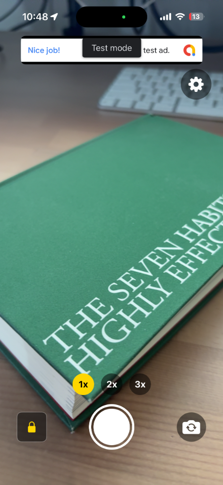

無音カメラ
(sizukame)
静かな場所でもシャッター音を気にせず撮影できる高画質カメラアプリ。（近日リリース）
- 完全無音: シャッター音が鳴らないため、静かなレストランやペットの撮影に最適です。
- 高画質撮影: デフォルトカメラに劣らない、クリアで美しい写真が撮れます。
- シンプルUI: 迷わず直感的に使える、洗練されたインターフェース。

静かな場所でもシャッター音を気にせず撮影できる高画質カメラアプリ。（近日リリース）
